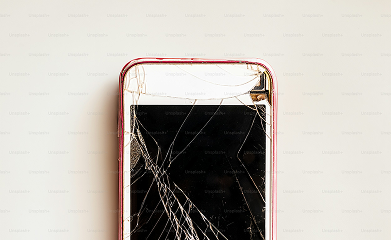
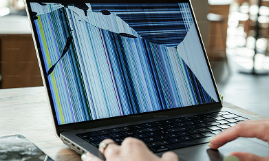

SERVICIOS:
Reparacion de dispoitivos moviles
- Reparacion de pantallas.
- Cambio de Bateria.
- Limpieza de corrosion por fluidos.
- Cambio de camaras.
- Recuperacion de datos.
- Mantenimiento general.
- Diagnostico sin cargo!


Reparacion de Computadoras y laptos.
- Formateo y respaldo de seguridad.
- Eliminacion de virus.
- Reinstalacion de sistema operativo.
- Cambio de piezas.
- Recuperacion de datos.
- Mantenimiento general de componentes.
- Diagnostico sin cargo!